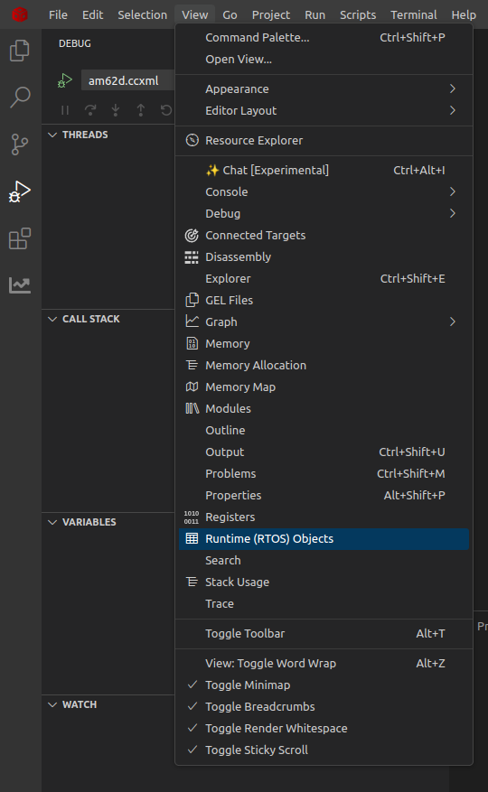
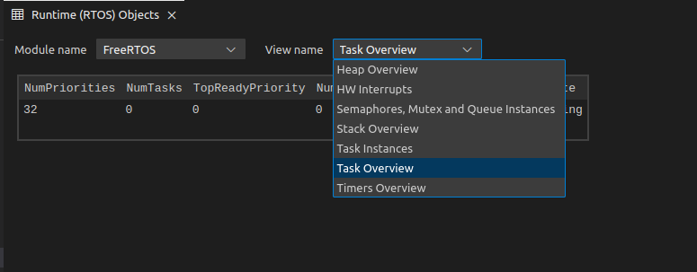

- Note
- The steps on this page are applicable to CCS 20.2.0 and above
Introduction
Runtime Object View (ROV) in CCS IDE allows users to view the state of a executing application via different easy to understand views. These views are generated by reading information from the running SW program using the JTAG debugger port.
This section explains,
- Using ROV with SDK examples
- Enabling ROV in your project
- Other important usage guidelines
Features Supported
Some of the supported ROV views are listed below
- View task state, including free stack size (only for FreeRTOS based application)
- View semaphore, mutex state, including which task is blocked on a semaphore and which task is holding onto a mutex (only for FreeRTOS based application)
- View SW timer state, including the callbacks that are registered, timer period (only for FreeRTOS based application)
- View HW interrupt state, including the ISRs that are registered and interrupt numbers that have ISRs registered. (FreeRTOS, NORTOS)
- View system heap and common stack information like ISR stack (FreeRTOS, NORTOS)
Features NOT Supported
- NORTOS ROV views are limited to heap, stack and HW interrupts
- ROV views for projects built using makefiles. ROV only works when the application is loaded and run via a CCS project
Using ROV with SDK examples
- Attention
- ROV only works when the application is loaded and run via a CCS project
- Note
- For an existing project, manually add the following entry in the syscfg_c.rov.xs already present in the project
var objectViewerFiles = [
"kernel/freertos/rov_theia/FreeRTOS_Theia.rov.js",
];
-
For C7x, to list static variables in the mapfile, add a new linker flag –mapfile_contents=sym_defs under LFLAGS_common in the existing project makefile and example.projectspec
- Make sure you are able to load and run SDK examples using CCS projects (see Getting Started)
- Halt the program, this is important, otherwise the JTAG debugger cannot read memory for the running CPU to get the state information that ROV needs.
- To launch ROV, click on ‘CCS Menu > View > Runtime (RTOS) Objects’ as shown below

Start ROV from CCS Menu
- This will launch the ROV viewer as shown below

Runtime (RTOS) Objects after loading the program
- Run the halted program after seeing the desired state. After running for some time, to see the updated state, simply halt the CPU again, the ROV window will show the updated state.
Enabling ROV in your project
Important Usage Guidelines
- You need to be connected via JTAG for ROV to read and display information from the loaded program.
- The program needs to be in a halted state, else the JTAG debugger cannot read the SOC memory which is needed to update its views.
- When you reload and run the program again OR you load and run a new program, you need to close current ROV window and launch ROV again.
- Many of the FreeRTOS ROV views rely on certain FreeRTOS config to be enabled in order to show the information correctly. If any of the below FreeRTOS config are changed, the ROV views many NOT show all information correctly.
configQUEUE_REGISTRY_SIZE controls the maximum semaphores, queues, mutex that can be viewed by ROV. If the semaphore, queue, mutex count is more than this value, then the additional objects will not be seen. In such a case, increase this value in the FreeRTOSConfig.h (source/kernel/freertos/config/{soc}/{cpu}/FreeRTOSConfig.h). Note, this only affects the objects seen in ROV view and has no effect on functionality of the created object in the program.configUSE_TRACE_FACILITY MUST be 1 for ROV to show estimated free stack size for tasks. This option writes a known pattern to the task stack and ROV then checks the point at which the pattern is overwritten to find the stack used so far by the task. If the configUSE_TRACE_FACILITY is disabled, the free stack size may show "STACK OVERFLOW", but you can ignore this since it is unable to find a known pattern at the top of stack and concludes that it is a stack overflow. The other task information displayed will still be correct.
- To make a semaphore, mutex or queue visible in ROV, register the object using the below function:
vQueueAddToRegistry(gMySemHandle, "My object name");
- To make FreeRTOS SW timer visible in ROV view, it needs to be started using the below function:
xTimerStart(gMyTimerHandle, portMAX_DELAY);
- When the SW timer stops on its own or is stopped via
xTimerStop, it is no longer visible in the ROV view.
- When using DPL Semaphore APIs, internally it calls
vQueueAddToRegistry to register semaphores and mutex with a default name.
- The free stack size shown for a task in ROV views is a estimated value, and it should be used with care as listed below,
- To reduce the time needed to read the stack memory for a known pattern and to compute the free stack size, the ROV logic reads 4 bytes every 128 bytes, this allows the stack free space computation to be fast but with a accuracy loss of 128 bytes at most.
- In some cases, if the stack has the pattern to be checked for (
0xa5a5a5a5), then the ROV views may incorrectly interpret that specific 128 bytes stack chunk as "free" when really it is not free.
- If tasks with very large stacks or there are a lot of tasks, task view in ROV may take a some time to compute the task stack size. In the worst case scenario, it may also timeout.
 1.8.20
1.8.20